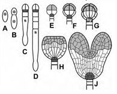
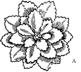
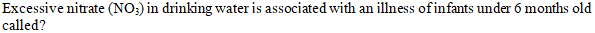
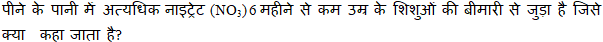

The chromophore plus the apoprotein is referred to as? क्रोोमोफोर प्लस एपोप्रोोटीन को क्याा कहा जाता है?
ACryptochromes क्रिप्टोोक्रोोमेस
BPhototropin फोटोट्रोोपिन
CPhytochromes फाइटोक्रोोमेस
DHoloprotein होलोप्रोोटीन
EXPLANATIONCorrect Answer: D
The correct answer is D because it matches the definition: Holoprotein होलोप्रोोटीन .
Question 22ID: 2622668Page: 347
What is the ratio of the actual water content of air to the maximum amount of water that can be held by air at that temperature? हवा में पानी की वास्तविक मात्राा और उस तापमान पर हवा द्वाारा धारण किए जा सकने वाले पानी की अधिकतम मात्राा का अनुपात क्याा है?
ARelative humidity सापेक्षिक आर्द्रता
BAbsolute vapour pressure पूर्ण वाष्प दबाव
CTurgor pressure टर्गर दबाव
DWater retention capacity जल धारण क्षमता
EXPLANATIONCorrect Answer: A
The correct answer is A because it matches the definition: Relative humidity सापेक्षिक आर्द्रता .
The correct answer is C because it matches the definition: Superoxide dismutase (SOD) सुपरऑक्सााइड डिसम्यूटेज (एसओडी) .
Question 24ID: 2622675Page: 348
What kind of development is depicted in the given figure below? किस प्रकार के विकास को नीचे दिए गए चित्र में दर्शाया गया है?

AFruit development फलों का विकास
BFlower development पुष्प विकास
CLeaf development पत्तीी का विकास
DEmbryo development भ्रूण विकास
EXPLANATIONCorrect Answer: D
The correct answer is D because it matches the definition: Embryo development भ्रूण विकास .
Question 25ID: 2622676Page: 349
The grass "seed" is actually an indehiscent one-seeded fruit in which the testa and pericarp fuse together to form one? घास "बीज" वास्तव में एक अस्फुुटनशील एक बीज वाला फल है जिसमें टेस्टाा और पेरिकार्प एक साथ मिलकर एक क्याा बनाते हैं।
ACaryopsis कैरियोप्सिस
BPerisperm पेरिस्पर्म
CEndocarp इंडोकार्प
DGynoecium जिनोएसियम
EXPLANATIONCorrect Answer: A
The correct answer is A because it matches the definition: Caryopsis कैरियोप्सिस .
Question 26ID: 2622681Page: 349
What is untrue about tapetum? टेपेटम के बारे में क्याा असत्य है?
AThe tapetum is a specialized cell layer that functions as a source of nutrients for developing pollen grains. टेपेटम एक विशेष कोशिका परत है जो परागकणों के विकास के लिए पोषक तत्वोंों के स्रोोत के रूप में कार्य करती है।
BTapetal cells are secretory and contain dense cytoplasm. टेपेटल कोशिकाएं स्राावी होती हैं और इनमें सघन कोशिका द्रव्य होता है।
CThey produce intine precursors, proteins and lipids that form the pollen coat. वे आंतों के अग्रदूत, प्रोोटीन और लिपिड का उत्पाादन करते हैं जो पराग कोट बनाते हैं।
DIn many species a layer of tapetal cells remains intact around the anther locule; this type of tapetum is termed the secretory type (or cellular, glandular or parietal) कई प्रजातियों में टेपीटल कोशिकाओं की एक परत एथेर लोक्यूल के आसपास बरकरार रहती है; इस प्रकार के टेपीटम को स्राावी प्रकार (या कोशिकीय, ग्रंथियों या पार्श्विका) कहा जाता है।
EXPLANATIONCorrect Answer: C
The correct answer is C because it matches the definition: They produce intine precursors, proteins and lipids that form the pollen coat. वे आंतों के अग्रदूत, प्रोोटीन और लिपिड का उत्पाादन करते हैं जो पराग कोट बनाते हैं। .
Question 27ID: 2622685Page: 349
Which chemical compounds are not required by the plant for normal growth and development but are produced in the plant as “byproducts” of cell metabolisms? पौधों को सामान्य वृद्धि और विकास के लिए कौन से रासायनिक यौगिकों की आवश्यकता नहीं होती है, लेकिन पौधे में कोशिका मेटाबोलिज्म के "उपोत्द" के रूप में उत्पन्न होते हैं?
APrimary metabolites प्रााथमिक मेटाबोलाइट्स
BSecondary metabolites द्वितीयक मेटाबोलाइट्स
CTertiary metabolites तृतीयक मेटाबोलाइट्स
DQuaternary metabolites चतुर्धातुक मेटाबोलाइट्स
EXPLANATIONCorrect Answer: B
The correct answer is B because it matches the definition: Secondary metabolites द्वितीयक मेटाबोलाइट्स .
Question 28ID: 2622689Page: 350
The initiator tRNA occupies which site of the ribosome, which is positioned over the initiator AUG codon and is adjacent to the A site? आरंभकर्ता टीआरएनए राइबोसोम के कौन सी साइट पर कब्जाा कर लेता है, जो आरंभकर्ता ऐयूजी कोडन के ऊपर स्थित होता है और A साइट के निकट होता है?
AE site E साइट
BD site D साइट
CP site P साइट
DT site T साइट
EXPLANATIONCorrect Answer: C
The correct answer is C because it matches the definition: P site P साइट .
Question 29ID: 2622696Page: 350
Which of the following temperature condition represents a long-term stress situation? निम्नलिखित में से कौन सी तापमान स्थिति दीर्घकालिक तनाव की स्थिति का प्रतिनिधित्व करती है?
AFire आग
BFrost ठंढ
CHurricane चक्रवात
DJhoom farming झूम खेती
EXPLANATIONCorrect Answer: B
The correct answer is B because it matches the definition: Frost ठंढ .
Question 30ID: 2622702Page: 351
Nitrate degraded under anaerobic conditions to molecular N is called? अवायवीय परिस्थितियों में आणविक एन में नाइट्रेट का अपघटन क्याा कहलाता है?
ANitrification नाइट्रीीकरण
BDenitrification अनाइट्रीीकरण
CAmmonification अमोनीकरण
DNitrogen absorption नाइट्रोोजन अवशोषण
EXPLANATIONCorrect Answer: B
The correct answer is B because it matches the definition: Denitrification अनाइट्रीीकरण .
Question 31ID: 2622706Page: 351
The connecting capillaries are made from which material? कनेक्टिंग केशिकाएं किस पदार्थ से बनी होती हैं?
ATitanium and zirconium टाइटेनियम और जिरकोनियम
BStainless steel or from polyether-etherketon स्टेनलेस स्टीील या पॉलीथर-ईथर केटोन से
CSilica सिलिका
DPolystyrene पॉलीस्टाायरीन
EXPLANATIONCorrect Answer: B
The correct answer is B because it matches the definition: Stainless steel or from polyether-etherketon स्टेनलेस स्टीील या पॉलीथर-ईथर केटोन से .
Question 32ID: 2622710Page: 352
Which material is a synthetic glass with “ceramic-like” properties, which is generally produced by hydrolysis and condensation of a metal alkoxide (tetraethoxysilane) to form a “glass-like” material at room temperature? कौन सी सामग्रीी "सिरेमिक-जैसी" गुणों वाला एक सिंथेटिक ग्लाास है, जो आम तौर पर कमरे के तापमान पर "ग्लाास-जैसी" सामग्रीी बनाने के लिए एक धातु अल्कोोक्सााइड (टेट्रााएथॉक्सिसिलीन) के हाइड्रोोलिससस और संघनन द्वाारा निर्मित होती है?

AAgarose gel अगारोज जेल
BSDS PAGE एसडीएस पेज
CSol–gel सोल-जेल
DSilica gel सिलिका जेल
EXPLANATIONCorrect Answer: C
The correct answer is C because it matches the definition: Sol–gel सोल-जेल .
Question 33ID: 2622717Page: 352
Identify the Phyllotaxy of leaves shown in the figure given below. नीचे दिए गए चित्र में दर्शाई गई पत्तियों के फाइलोटैक्सीी को पहचानें।
AAlternate अलटरनैट
BWhorled व्होोर्लेड
CRosulate रोसुलेट
DOpposite अपोजिट
EXPLANATIONCorrect Answer: C
The correct answer is C because it matches the definition: Rosulate रोसुलेट .
Question 34ID: 2622723Page: 353
Who defined systematics as a ‘scientific study of the kinds and diversity of organisms, and of any and all relationships between them’? किसने सिस्टमैटिक्स को 'जीवों के प्रकार और विविधता, और उनके बीच किसी भी और सभी संबंधों का वैज्ञाानिक अध्ययन' के रूप में परिभाषित किया।?
AJean Baptist Lamarck जीन बैप्टिस्ट लैमार्क
BThompson Kipling थॉमसन किपलिंग
CThomas Henry Huxley थॉमस हेनरी हक्सले
DGeorge Gaylord Simpson जॉर्ज गेलॉर्ड सिम्पसन
EXPLANATIONCorrect Answer: D
The correct answer is D because it matches the definition: George Gaylord Simpson जॉर्ज गेलॉर्ड सिम्पसन .
Question 35ID: 2622727Page: 353
Curcumin’s biological activity cannot be increased by which of the following? निम्नलिखित में से किसके द्वाारा करक्यूमिन की जैविक गतिविधि को बढ़ााया नहीं जा सकता है?
ALiposomes लिपोसोम
BCyclodextrin साइक्लोोडेक्सट्रिन
CPolymeric nanoparticles पॉलिमरिक नैनोपार्टिकल्स
DSodium dodecyl sulphate सोडियम डोडेसिल सल्फेेट
EXPLANATIONCorrect Answer: D
The correct answer is D because it matches the definition: Sodium dodecyl sulphate सोडियम डोडेसिल सल्फेेट .
Question 36ID: 2622731Page: 354
Identify the plant species which share the same common name with Anemopaegmaarvense (Vell.) (Bignoniaceae). उन पौधों की प्रजातियों की पहचान करें जो एनीमोपेगमार्वेंस (Vell.) (बिग्नोोनियासी) के साथ समान नाम साझा करते हैं।
The correct answer is A because it matches the definition: Pisidium cinereum var. पिसिडियम सिनेरियम वर। .
Question 37ID: 2622738Page: 354
Ex-situ conservation measures do not include which of the following approach? बाह्य स्थाने संरक्षण उपायों में निम्नलिखित में से कौन सा दृष्टिकोण शामिल नहीं है?
ASeed bank बीज बैंक
BArtificial propagation of plants पौधों का कृत्रिम प्रसार
CCulture collections संस्कृृति संग्रह
DBotanical garden बोटैनिकल गार्डन
EXPLANATIONCorrect Answer: D
The correct answer is D because it matches the definition: Botanical garden बोटैनिकल गार्डन .
Question 38ID: 2622744Page: 355
Which of the following is not a type of tropical region? निम्न में से कौन सा उष्णकटिबंधीय क्षेत्र का प्रकार नहीं है?


ANeotropics निओट्रोोपिक्स
BAfrotropics एफ्रोोट्रोोपिक्स
CIndotropics इंडोट्रोोपिक्स
DAgeotropic एजियोट्रोोपिक
EXPLANATIONCorrect Answer: D
The correct answer is D because it matches the definition: Ageotropic एजियोट्रोोपिक .
Question 39ID: 2622752Page: 355
Page: 355 Q.No: 39 2622752
AKwashiorkor क्वााशियोरकोर
BMethemoglobinemia मेथेमोग्लोोबिनेमिया
CSickel cell anaemia सिकल सेल एनीमिया
DKetonuria केटोनुरिया
EXPLANATIONCorrect Answer: B
The correct answer is B because it matches the definition: Methemoglobinemia मेथेमोग्लोोबिनेमिया .
Question 40ID: 2622759Page: 355
Which term is defined as the cultivation of plants in systems without soil “in situ” and this method is the most intensive and effective in today’s horticultural industry? किस शब्द को "इन सीटू" बिना मिट्टीी के सिस्टम में पौधों की खेती के रूप में परिभाषित किया गया है और यह विधि आज के बागवानी उद्योोग में सबसे गहन और प्रभावी है?
ASemi horticulture अर्ध बागवानी
BFloriculture फ्लोोरीकल्चर
CSoilless culture भूमिहीन संस्कृृति
DPisciculture मत्स्य पालन
EXPLANATIONCorrect Answer: C
The correct answer is C because it matches the definition: Soilless culture भूमिहीन संस्कृृति .
Question 35ID: 2622665Page: 511
Phytochrome and cryptochrome responses are which responses? फाइटोक्रोोम और क्रिप्टोोक्रोोम अनुक्रियाएं, कौन साअनुक्रियाएं होती हैं।
AMorphogenetic मॉर्फ़ोजेनेटिक
BPhysicochemical फिजियोकेमिकल
CElectromagnetic विद्युतचुंबकीय
DUltraprotective अल्ट्रााप्रोोटेक्टिव
EXPLANATIONCorrect Answer: A
The correct answer is A because it matches the definition: Morphogenetic मॉर्फ़ोजेनेटिक .
Question 36ID: 2622666Page: 512
Organs that exhibit little or no sensitivity to gravity are known as? वे अंग जो गुरुत्वााकर्षण के प्रति बहुत कम या कोई भी संवेदनशीलता प्रदर्शित नहीं करते हैं, वे क्याा कहलाते हैं।
APlagiogravitropic प्लेगियोग्रेविट्रोोपिक
BAgravitropic अग्रविट्रोोपिक
COrthogravitropic ऑर्थोग्रेविट्रोोपिक
DDiagravitropic डायग्रेविट्रोोपिक
EXPLANATIONCorrect Answer: B
The correct answer is B because it matches the definition: Agravitropic अग्रविट्रोोपिक .
Question 37ID: 2622670Page: 512
The inner membrane of the mitochondrion is extensively infolded. These invaginations form a dense network of internal membranes called as? माइटोकॉन्ड्रिया की आंतरिक झिल्लीी व्याापक रूप से मुड़ीी हुई होती है। ये अंतर्वलन आंतरिक झिल्लियों का एक घना नेटवर्क बनाते हैं उसे क्याा कहा जाता है।
ACisternae सिस्टर्न
BCristae क्रिस्टाा
CPlastids प्लाास्टिड
DQuantasomes क्वांांटासोम्स
EXPLANATIONCorrect Answer: B
The correct answer is B because it matches the definition: Cristae क्रिस्टाा .
Question 38ID: 2622671Page: 513
Which non-green product is formed by the loss of the magnesium ion from chlorophyll? क्लोोरोफिल से मैग्नीीशियम आयन की हानि से कौन सा गैर-हरित उत्पााद बनता है?
APorphyrin पॉरफाइरिन
BPhytol फाइटोल
CPheophytin फियोफाइटिन
DPheromone फेरोमोन
EXPLANATIONCorrect Answer: C
The correct answer is C because it matches the definition: Pheophytin फियोफाइटिन .
Question 39ID: 2622677Page: 513
In which fruit the fleshy mesocarp is interspersed with thick-walled sclereids? किस फल में मांसल मेसोकार्प मोटी दीवार वाले स्केेलेरिड से घिरा हुआ है?
APrunus persica (peach) प्रूनस पर्सिका (आड़ूू)
BOlea europaea (olive) ओलिया यूरोपिया (जैतून)
CVitis vinifera (grape) विटिस विनिफेरा (अंगूर)
DDrupes ड्रुप्स
EXPLANATIONCorrect Answer: B
The correct answer is B because it matches the definition: Olea europaea (olive) ओलिया यूरोपिया (जैतून) .
Question 40ID: 2622678Page: 514
Some flowers bear oil-secreting glands, which are morphologically similar to some types of nectary. What are these structures called? कुछ फूलों में तेल स्राावित करने वाली ग्रंथियां होती हैं, जो रूपात्मक रूप से अमृत के कुछ प्रकारों के समान होती हैं। इन संरचनाओं को क्याा कहा जाता है?
AElaiophores इलायोफोरस
BOsmophores ऑस्मोोफोरस
CPheromones फेरोमोंस
DSuckers सुस्केेर्स
EXPLANATIONCorrect Answer: A
The correct answer is A because it matches the definition: Elaiophores इलायोफोरस .
Question 41ID: 2622682Page: 514
In Aloe, which is a specialized tissue that is the source of aloin? एलो में, क्याा एक विशेष ऊतक है जो एलोइन का स्रोोत है?
AInner palisade tissue इनर पैलिसेड ऊतक
BMedullary rays मेडुलरी किरणें
COuter bundle sheath बाहरी बंडल शीथ
DInner cortex भीतरी कोर्टेक्स
EXPLANATIONCorrect Answer: C
The correct answer is C because it matches the definition: Outer bundle sheath बाहरी बंडल शीथ .
Question 42ID: 2622683Page: 515
What is indicated by the number of vascular bundles in the style of a syncarpous gynoecium? सिंकार्पस गाइनोकेशियम की शैली में संवहनी बंडलों की संख्याा से क्याा संकेत मिलता है?
ANumber of Sepals सेपल्स की संख्याा
BNumber of Carpels कार्पल्स की संख्याा
CNumber of Petals पेटल्स की संख्याा
DNumber of Stamen पुंकेसर की संख्याा
EXPLANATIONCorrect Answer: B
The correct answer is B because it matches the definition: Number of Carpels कार्पल्स की संख्याा .
Question 43ID: 2622686Page: 515
What are encapsulated somatic embryos called? संपुटित कायिक भ्रूण किसे कहते हैं?
AGranulated embryos ग्रनुलेटेड भ्रूण
BSynthetic seeds सिंथेटिक बीज
CProtoplast प्रोोटोप्लाास्ट
DSomatic seeds सोमेटिक बीज
EXPLANATIONCorrect Answer: B
The correct answer is B because it matches the definition: Synthetic seeds सिंथेटिक बीज .
Question 44ID: 2622687Page: 516
What are regulatory proteins that bind to DNA and to other regulatory proteins to effect gene expression? नियामक प्रोोटीन क्याा हैं जो जीन अभिव्यक्ति को प्रभावित करने के लिए डीएनए और अन्य नियामक प्रोोटीन को बांधते हैं?
ATranscription factors ट्रांांस्क्रिप्शनल फैक्टर
BRecombination factors रेकॉम्बिनेशन फैक्टर
CTranslation factors ट्रांांसलेशन फैक्टर
DSplicing factors स्प्लिसिंग फैक्टर
EXPLANATIONCorrect Answer: A
The correct answer is A because it matches the definition: Transcription factors ट्रांांस्क्रिप्शनल फैक्टर .
Question 45ID: 2622690Page: 516
Which nature of the strands means that each strand provides a template for the synthesis of the other? स्ट्रैंड्स की किस प्रकृति का अर्थ है कि प्रत्येक स्ट्रैंड दूसरे के संश्लेषण के लिए एक टेम्प्लेट प्रदान करता है?
AAcidic अम्लीीय
BNegative नकारात्मक
CDouble-stranded दोहरी स्ट्रैंड्स
DComplementary कॉम्प्लिमेंटरी
EXPLANATIONCorrect Answer: D
The correct answer is D because it matches the definition: Complementary कॉम्प्लिमेंटरी .
Question 46ID: 2622691Page: 517
Which is a hydrocarbon gas, is a very simple molecule that is best known for its stimulation of fruit ripening and promotion of the seedling triple response? कौन सी एक हाइड्रोोकार्बन गैस, एक बहुत ही सरल अणु है जो फलों के पकने की उत्तेजना और सीडलिंग ट्रपल प्रतिक्रिया को बढ़ाावा देने के लिए सबसे अच्छीी तरह से जाना जाता है?
ACytokinin साइटोकिनिन
BAuxin औक्सिन
CGibberellic acid (GA) जिबरेलिक एसिड (जीए)
DEthylene ईथीलीन
EXPLANATIONCorrect Answer: D
The correct answer is D because it matches the definition: Ethylene ईथीलीन .
Question 47ID: 2622697Page: 517
Which of the following condition occurs in plants due to iron deficiency? पौधों में आयरन की कमी के कारण निम्नलिखित में से कौन-सी स्थिति उत्पन्न होती है?
ARotting सड़ जाना
BNecrosis गल जाना
CWilting मुरझाना
DChlorosis हरित हीनता (पीला पड़ जाना)
EXPLANATIONCorrect Answer: D
The correct answer is D because it matches the definition: Chlorosis हरित हीनता (पीला पड़ जाना) .
Question 48ID: 2622698Page: 518
Hydrolases which can break down fungal cell walls and are usually expressed in context with a hypersensitive reaction belongs to which group of proteins? हाइड्रॉॉलिसिस जो कवक कोशिका की दीवारों को तोड़ सकता है और आमतौर पर एक अतिसंवेदनशील प्रतिक्रिया के संदर्भ में व्यक्त किया जाता है, प्रोोटीन के किस समूह से संबंधित है?
AAldolase एल्डोोलेस
BTranscription proteins ट्रांांसक्रिप्शन प्रोोटीन
CChannel proteins चैनल प्रोोटीन
DPR proteins (pathogenesis-related proteins) पीआर प्रोोटीन (रोगजनन से संबंधित प्रोोटीन)
EXPLANATIONCorrect Answer: D
The correct answer is D because it matches the definition: PR proteins (pathogenesis-related proteins) पीआर प्रोोटीन (रोगजनन से संबंधित प्रोोटीन) .
Question 49ID: 2622703Page: 518
Which foreign substances (with respect to an organism) which have biological activity and, depending on the toxicity and amount taken up, trigger defence reactions, cause damage or even death of the organism? कौनसा विदेशी पदार्थ हैं (जीव के संबंध में) जिनमें जैविक गतिविधि होती है और, विषाक्तता और ली गई मात्राा के आधार पर, रक्षाा प्रतिक्रियाओं को ट्रिगर करते हैं, जीव की क्षति या यहां तक कि मृत्यु का कारण बनते हैं?
AXenobiotics ज़ेनोबायोटिक्स
BMutants म्युटेंट
CPollens पोलेन
DPlasmids प्लाास्मिड
EXPLANATIONCorrect Answer: A
The correct answer is A because it matches the definition: Xenobiotics ज़ेनोबायोटिक्स .
Question 50ID: 2622707Page: 519
The developed TLC is overlaid with a seeded agar gel, enabling a uniform contact between the chromatogram and the inoculated medium. After solidification of the gel, plates are incubated and subsequently observed after development when needed. Identify the type of TLC? विकसित टीएलसी क्रोोमैटोग्रााम और इनोक्युलेटेड माध्यम के बीच एक समान संपर्क को सक्षम करने वाले एक बीज वाले अगर जल के साथ मढ़ाा हुआ है। जेल के जमने के बाद, प्लेटों को इनक्यूबेट किया जाता है और बाद में जरूरत पड़ने पर विकास के बाद मनाया जाता है। टीएलसी के प्रकार की पहचान करें।
The correct answer is B because it matches the definition: Planar chromatographic प्लाानर क्रोोमैटोग्रााफिक .
Question 52ID: 2622711Page: 520
Which component of a microscope facilitates the illumination of the specimen? The field diaphragm only controls the width of the bundle of light reaching the condenser. माइक्रोोस्कोोप का कौन सा घटक नमूने की रोशनी की सुविधा प्रदान करता है? फील्ड डायफ्रााम केवल कंडेनसर तक पहुंचने वाले प्रकाश के बंडल की चौड़ााई को नियंत्रित करता है|
AEyepiece आईपीस
BFine adjustment फाइन एडजस्टमेंट
CCondenser कंडेनसर
DEco-illumination ईको - इलूमनेशन
EXPLANATIONCorrect Answer: C
The correct answer is C because it matches the definition: Condenser कंडेनसर .
Question 53ID: 2622712Page: 520
Which type of objective lenses are corrected chromatically for the colours red, green, and blue (and sometimes for dark blue too) and corrected spherically for two colours? किस प्रकार के ऑब्जेक्टिव लेंस को लाल, हरे और नीले रंग (और कभी-कभी गहरे नीले रंग के लिए भी) के लिए क्रोोमेटिक रूप से संशोधित किया जाता है और दो रंगों के लिए गोलाकार रूप से सही किया जाता है?
AApochromatic objectives एपोक्रोोमैटिक ऑब्जेक्टिव
BFluorite objectives फ्लोोराइट ऑब्जेक्टिव
CAchromatic objectives अक्रोोमेटिक ऑब्जेक्टिव
DSemi-apochromates अर्ध-एपोक्रोोमेट्स
EXPLANATIONCorrect Answer: A
The correct answer is A because it matches the definition: Apochromatic objectives एपोक्रोोमैटिक ऑब्जेक्टिव .
Question 54ID: 2622718Page: 521
Which is a metallic box with a tightly fitted lid and a shoulder sling? It is used to store specimens temporarily before pressing and also to store bulky parts and fruits. कौन सी एक धातु का बक्साा होता है जिसका ढक्कन कसकर बंधा होता है और एक शोल्डर स्लिंग होती है? इसका उपयोग नमूनों को दबाने से पहले अस्थायी रूप से संग्रहीत करने के लिए और भारी भागों और फलों को संग्रहीत करने के लिए भी किया जाता है।
AFlexostat फ्लेक्सोोस्टेट
BVasculum वास्कुुलम
CField notebook फील्ड नोटबुक
DPlant Press प्लांांट प्रेस
EXPLANATIONCorrect Answer: B
The correct answer is B because it matches the definition: Vasculum वास्कुुलम .
Question 55ID: 2622719Page: 521
Which of the following chemicals with an offensive odour or taste is kept in herbarium cases to keep pests away from specimens? कीटों को नमूनों से दूर रखने के लिए निम्नलिखित में से कौन सा रसायन एक अप्रिय गंध या स्वााद के साथ हर्बेरियम केस में रखा जाता है?
ANaphthalene नेफ़थलीन
BChoro-flouro-carbon क्लोोरो-फ्लोोरो-कार्बन
CEthylene dioxide एथिलीन डाइऑक्सााइड
DHydrogen peroxide हाइड्रोोजन पेरोक्सााइड
EXPLANATIONCorrect Answer: A
The correct answer is A because it matches the definition: Naphthalene नेफ़थलीन .
Question 56ID: 2622724Page: 522
Which of the following is a biologically active molecule against cancer that has been isolated from plants and approved by FDA? निम्नलिखित में से कौन सा कैंसर के खिलाफ जैविक रूप से सक्रिय अणु है जिसे पौधों से अलग किया गया है और एफडीए द्वाारा अनुमोदित किया गया है?
APolyphenols पॉलीफेनोल्स
BGinseng जिनसेंग
CAdenosine एडेनोसाइन
DTeniposide टेनिपोसाइड
EXPLANATIONCorrect Answer: D
The correct answer is D because it matches the definition: Teniposide टेनिपोसाइड .
Question 57ID: 2622728Page: 522
Which among the following is not a modifiable risk factor? निम्नलिखित में से कौन सा परिवर्तनीय जोखिम कारक नहीं है?
AHypertension उच्च रक्तचाप
BCigarette use सिगरेट का प्रयोग
CFrequent migraines बार-बार होने वाला माइग्रेन
DAge उम्र
EXPLANATIONCorrect Answer: D
The correct answer is D because it matches the definition: Age उम्र .
Question 58ID: 2622729Page: 523
Polyherbal formulations (PHF) is also called as? पॉलीहर्बल फॉर्मूलेशन (पीएचएफ) को क्याा कहा जाता है?
APolypharmacy पॉलीफार्मेसी
BPhytoremedy फाइटोरेमेडी
CPolytechnique पॉलीटेक्निक
DPolyayurveda पॉलीआयुर्वेद
EXPLANATIONCorrect Answer: A
The correct answer is A because it matches the definition: Polypharmacy पॉलीफार्मेसी .
Question 59ID: 2622732Page: 523
Efficacy and safety are the two main factors to be considered while using ethnobotanical plants. Which among the following is not a criterion to be considered for determining efficacy and safety? एथ्नोबोटैनिकल पौधों का उपयोग करते समय विचार की जाने वाली प्रभावकारिता और सुरक्षाा दो मुख्य कारक हैं। निम्नलिखित में से कौन सा मानदंड प्रभावकारिता और सुरक्षाा का निर्धारण करने के लिए विचार नहीं किया जाना चाहिए?
AThe taxonomic identity टैक्सोोनोमिक पहचान
BThe habitat from which it comes वह उत्पत्तिस्थान स्थान जहाँ से यह आता है
CThe dosage used इस्तेमाल की गई खुराक
DThe growth phase of a plant पौधे की वृद्धि अवस्था
EXPLANATIONCorrect Answer: D
The correct answer is D because it matches the definition: The growth phase of a plant पौधे की वृद्धि अवस्था .
Question 60ID: 2622733Page: 524
Which among the following is not a phenolic compound present in a plant? निम्नलिखित में से कौन सा एक पौधे में मौजूद एक फेनोलिक यौगिक नहीं है?
AXanthones जैन्थोोन्स
BCondensed tannins संघनित टैनिन
CAnthraquinone एंथ्रााक्विनोन
DSodium lauryl sulphate सोडियम लॉरिल सल्फेेट
EXPLANATIONCorrect Answer: D
The correct answer is D because it matches the definition: Sodium lauryl sulphate सोडियम लॉरिल सल्फेेट .
Question 61ID: 2622739Page: 524
Which of the following is not a cause for habitat loss? निम्न में से कौन सा निवास स्थान के नुकसान का कारण नहीं है?
AAfforestation वनरोपण
BShifting agriculture स्थानान्तरित कृषि
CInfrastructure development आधारभूत संरचना का विकास
DLivestock farming पशुपालन
EXPLANATIONCorrect Answer: A
The correct answer is A because it matches the definition: Afforestation वनरोपण .
Question 62ID: 2622740Page: 525
Which of the following is not a threat to biodiversity? निम्नलिखित में से कौन जैव विविधता के लिए खतरा नहीं है?
ADirect exploitation प्रत्यक्ष शोषण
BHabitat loss and degradation प्रााकृतिक वास में नुकसान और गिरावट
CIntroduced species प्रजातियाँ की पहचान कराना
DIn-situ conservation इन-सीटू संरक्षण
EXPLANATIONCorrect Answer: D
The correct answer is D because it matches the definition: In-situ conservation इन-सीटू संरक्षण .
Question 63ID: 2622745Page: 525
Which of the following is not considered in the ‘big five’ mass extinctions? निम्नलिखित में से किसे 'बिग फाइव' सामूहिक विलुप्ति में नहीं माना जाता है?
ALate Ordovician लेट ऑर्डोवियन
BLate Devonian लेट डेवोनियन
CLate Permian लेट पर्मियन
DLate dodo लेट डोडो
EXPLANATIONCorrect Answer: D
The correct answer is D because it matches the definition: Late dodo लेट डोडो .
Question 64ID: 2622748Page: 526
The smallest natural populations permanently separated from each other by a distinct discontinuity in heritable characteristics is called as? वंशागत विशेषताओं में एक विशिष्ट विच्छिन्नता द्वाारा स्थायी रूप से एक दूसरे से अलग की गई सबसे छोटी प्रााकृतिक आबादी को क्याा कहा जाता है?
AEvolutionary species विकासवादी प्रजाति
BMorphological species मोर्फोलॉजिकल प्रजाति
CPhylogenetic species फाइलोजेनेटिक प्रजातियां
DRecognition species रिकग्निशन प्रजाति
EXPLANATIONCorrect Answer: B
The correct answer is B because it matches the definition: Morphological species मोर्फोलॉजिकल प्रजाति .